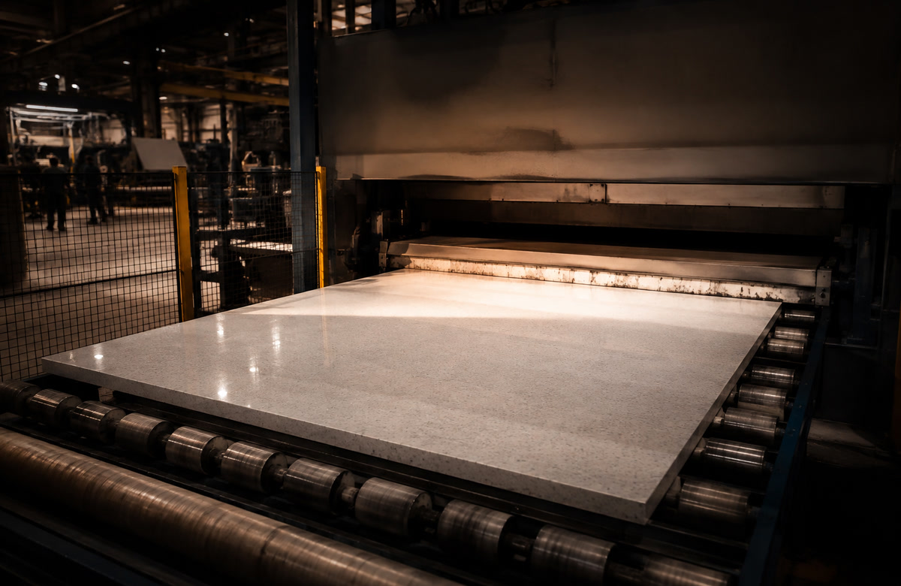
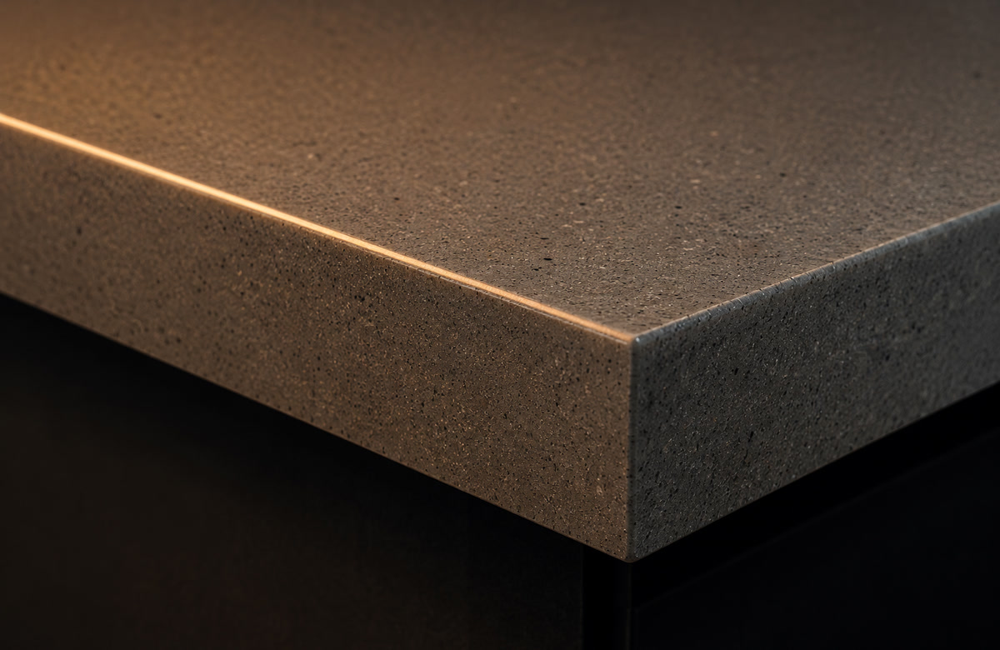

Engineered stone isn't quarried in one piece — it's built, from crushed quartz and resin, under enough pressure to fuse it into something harder and more consistent than most of the rock it's made from.
Engineered stone starts as raw quartz — one of the hardest common minerals there is — crushed down to sand and fine gravel. That's mixed with polyester resin (the binder) and pigment, then loaded into a mould and vibro-compacted under vacuum: shaken and pressed hard enough to force out every air pocket while the vacuum stops new ones forming. A short cure in a kiln locks the slab solid.
The result is a surface that's roughly 90–95% natural quartz by weight, but behaves nothing like a quarried stone, because it never has the flaws quarried stone has. No fault lines, no weak veining, no natural pits. Every slab in a batch comes out close to identical, which is exactly the point — it's a material built to be predictable.


Unlike marble or quartzite, engineered stone has no ancient history — it was invented. An Italian company, Breton, patented the vacuum-compaction process in the early 1960s as a way to turn quarry offcuts and waste stone into something usable, rather than something dumped.
What started as a way to use leftover material became one of the most widely fitted countertop surfaces in the world, precisely because it solved the problems natural stone can't: consistency, non-porosity, and a slab that performs almost identically whether it's slab one or slab one thousand off the line.
It's the surface for a household that doesn't want to think about its countertop. Because the resin binder seals every pore during manufacturing, engineered stone never needs sealing — not at installation, not five years later, not ever. Red wine, turmeric, olive oil, lemon juice: none of it soaks in the way it would on marble or quartzite, because there's nowhere for it to soak into.
It reads as a slightly more uniform, more graphic surface than natural stone — patterns repeat across a slab in a way real veining never does, which some people love for the clean consistency and others find less characterful than the real thing. That trade-off, consistency for character, is really the whole decision between engineered and natural stone.
Engineered stone resists almost everything marble is vulnerable to — but the resin binder that makes it non-porous is also its one real weak point, and it reacts badly to two specific things.
A pot straight off the stove, or a sudden hot-to-cold swing, can stress the resin enough to crack or discolour the surface around the contact point. Natural stone shrugs this off far better — engineered stone doesn't.
Bleach, paint stripper, oven cleaner, and other strong solvents can dull or discolour the resin over time. It won't happen from one wipe, but repeated contact will visibly flatten the sheen.
For anything straight off the stove or out of the oven. This is the single most common way engineered stone gets damaged.
Warm water and mild soap, or a dedicated stone-safe cleaner, is all it ever needs. No sealing, no special polish.
Years of strong UV exposure can fade the resin. Engineered stone is rated for indoor use; check with us before specifying it outdoors.
Nothing soaks in, so there's no urgency — but a quick wipe keeps pigment or dye from any spill from sitting on the surface.
Usually a sign a harsh chemical sat on the surface. It won't come back with cleaning — the resin itself has dulled. Light cases can sometimes be polished back; more advanced cases need a professional look.
Almost always from direct contact with something hot. Small marks can sometimes be polished out; a crack needs an assessment — send us a photo before deciding anything.
Less common than on natural stone since it's a dense, uniform material, but a sharp impact on a corner can still chip it. Repairable and colour-matched, same as any other surface.
Close to it — no sealing, ever, and it resists stains completely. "Maintenance-free" still means treat it like a kitchen surface, not a cutting board or a trivet.
Weighing it up against natural stone for your kitchen? Tell us what you're planning and we'll give you a straight comparison for your specific space.